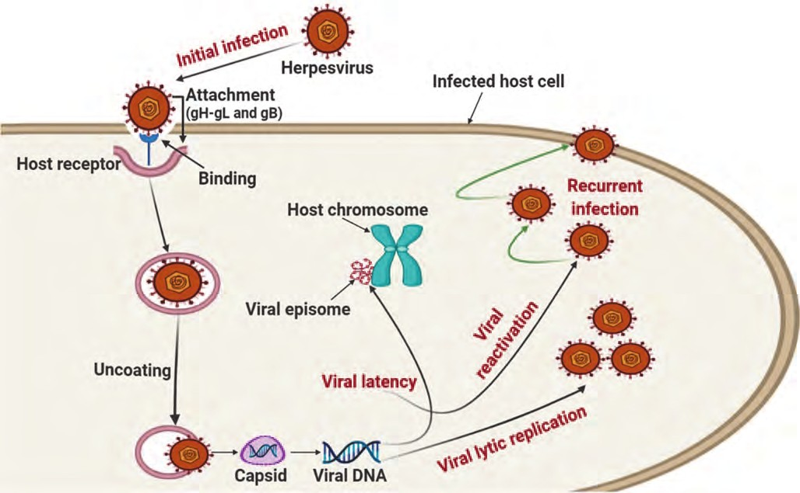

Наука · журнал «ДентАрт» 2024 №3
Клінічні «маски» герпетичної інфекції
CLINICAL «MASKS» OF HERPES INFECTION
*Вірус Епштейна – Барр (ВЕБ) було вперше виділено з клітин злоякісної лімфоми Беркіта в 1964 р. і названо за прізвищами британських науковців, які його скультивували: вірусолога, професора Ентоні Епштейна і його тодішньої аспірантки Івонн Барр.
Всесвітня організація охорони здоров'я (ВООЗ) оголосила ХХІ століття епохою вірусів.1 У наш час неухильно зростає кількість хворих рецидивуючим герпесом, який викликаний вірусами простого герпесу (ВПГ) 1 і 2 типу. У сучасній інфектології герпесвірусні інфекції (ГВІ) посідають одне з чільних місць. Щороку надходить інформація про нові клінічні «маски» ГВІ та роль різних типів ГВ у розвитку онкологічних, судинних, гематологічних, аутоімунних, нервових захворювань (Исаков В. А., Борисова В. В., 1999; Yound P., Main J., 2003; Kandoff R., 2004; Ibrahim A. I., Obeid M. T., 2005).1-6
Вид ВПГ належить до роду Herpesviridae, родини L-Herpesviridae. Розрізняють два основні типи вірусу – ВПГ 1 і ВПГ 2. Інфікування можливе як одним, так і двома типами збудника. Окрім того, за даними О. М. Панасюк, у 59,7 % хворих із загальної кількості хворих з ГВІ спостерігаються асоціації ГВ, серед яких переважають три: ВПГ і цитомегаловірус у 22,9 %, ВПГ, цитомегаловірус і вірус Епштейна – Барр у 15,3 %, ВПГ і вірус Епштейна – Барр у 8,1 %.
ВПГ здатний проникати в різноманітні клітини організму людини: у клітини шкіри, слизові оболонки урогенітального і травного тракту, ротової порожнини, дихальних шляхів, центральної і периферичної нервової системи, печінки, ендотелію судин, а також клітин крові – лімфоцити та ін.7,8 Місце постійного існування (персистування протягом усього життя) ВПГ – паравертебральні сенсорні ганглії. ВПГ передається прямим контактним шляхом, можлива передача збудника побутовим контактним і вертикальним шляхом (від матері до плоду), а також трансфузійним і парентеральними шляхами через інструменти при оперативних втручаннях, стоматологічних процедурах і т. п.
Як відомо, більшість людей інфіковані ВПГ. За даними ВООЗ (2004 рік), серед вірусних інфекцій захворювання, зумовлені вірусом простого герпесу, посідають друге місце після грипу, а загальна ураженість ВПГ коливається від 50 до 100 %, що робить герпесвірусні захворювання соціально значущими. ВПГ-інфекція має широке розповсюдження серед населення України – антитіла до ВПГ 1, 2 виявляються у 90 % мешканців країни.
ВПГ належить значна роль в інфекційній патології людини, при цьому різноманітність клінічних проявів залежить від локалізації та поширеності патологічного процесу, імунного статусу хворого. Клінічно в ротовій порожнині герпетична інфекція проявляється у двох формах:
- гострий герпетичний стоматит – первинна герпетична інфекція;
- хронічний рецидивуючий герпес.
Первинне зараження вірусом герпесу може відбутися у будь-якому віці, але найчастіше спостерігається у дітей у віці від 6 місяців до 3 років у вигляді гінгівостоматиту і пов'язане зі зникненням материнських антитіл у крові дитини, зниженням місцевого імунітету в ротовій порожнині, частим порушенням цілісності слизової оболонки під час прорізування зубів. Джерелом інфекції є хвора людина або вірусоносії. Епідемічно небезпечними є як хворі під час рецидиву, так і вірусоносії (або хворі) під час асимптоматичної реактивації герпетичної інфекції.10-12
Клінічними проявами цитомегаловірусної інфекції є такі синдроми: перинатальна інфекція новонароджених від матері з первинною CMV під час вагітності, гостра набута CMV інфекція, подібна до інфекційного мононуклеозу; СMV-синдром у імунокомпрометованих людей, включаючи ВІЛ-інфікованих. CMV може бути причиною ретинопатії, різноманітних гастроінтестинальних інфекцій, захворювань центральної нервової системи і, можливо, деяких типів атеросклерозу.
Виразкові ураження слизової оболонки ротової порожнини можуть бути пов'язані з CMV. За даними Contreras A., Slots J., у 53 % ВІЛ-позитивних пацієнтів виразки пов'язані з CMV, а ще у 28 % – із комбінацією CMV і ВПГ. Інколи в ці процеси можуть бути залучені тканини ясен та періодонта з наступною деструкцією кістки і розвитком остеомієліту.12
Класичне захворювання, яке викликає EBV-1, – інфекційний мононуклеоз. EBV також є причиною розвитку злоякісної лімфоми Беркіта та злоякісної носоглоткової карциноми. Встановлена роль ВГ у патогенезі езофагитів, пневмоній та інших захворювань, причиною яких раніше вважалася мікрофлора виключно бактеріального походження.
У залежності від терміну перебування збудника в організмі людини виділяють різноманітні форми взаємодії вірусу з організмом хазяїна. При недовготривалому перебуванні вірусу в організмі інфекційний процес може протікати або в гострій (короткий інкубаційний період з наступним розвитком характерних симптомів), або в безсимптомній (інапаратній) формі. При довготривалій персистенції вірусу виділяють такі форми інфекції:
- латентну (безсимптомна персистенція вірусу, при якій порушується повний цикл репродукції вірусу і він міститься в клітинах хазяїна у вигляді субвірусних структур: вважається, що може відбуватися репродукція зрілого вірусу з виділенням його у зовнішнє середовище);
- хронічну (персистенція вірусу відбувається у випадку, якщо скомпрометована імунна система не розпізнає вірус, у результаті чого розвивається повільноплинна інфекція і персистентна наявність вірусу). Можливий розвиток повільної вірусної інфекції, яка характеризується тривалим (місяці та роки) інкубаційним періодом з наступним повільним перебігом, розвитком тяжких клінічних симптомів і смертю хворого.
Форми з короткочасним і довготривалим (персистенція) перебуванням в організмі нерідко пов'язані між собою – одна форма інфекції переходить в іншу.13-15
СMV виявляють у багатьох клітинах організму, включаючи епітеліальні клітини різноманітних тканин при первинній інфекції, і в моноцитах та макрофагах у латентній фазі чи при персистенції. ДНК СMV також можна виявити при гострій інфекції в поліморфноядерних лейкоцитах.16-17 Іншими клітинами людини, тропними до СMV, є Т-лімфоцити, ендотеліальні клітини, фібробласти, клітини слинних залоз і клітини центральної нервової системи.
СMV стимулює як синтез білків, так і поділ інфікованих клітин, а також посилює експресію інтерлейкінів – lα і 1β, TNF-α, α-інтерферону в мононуклеарних клітинах. EBV інфікує орофарингеальний епітелій і В-лімфоцити – у латентний період. Для інфікування епітеліальних тканин потрібен комплекс глікопротеїнів EBV – gH – gL, а для В-лімфоцитів – gp42. Borza С. М. і Hutt-Fletcher L. M. (2002) вважають, що глікопротеїн gp42 служить перемикачем тропізму ЕВV з епітеліальних клітин на В-лімфоцити.
Репродукція ВГ у чутливих клітинах – складний процес, який протікає з участю багатьох віріонних, вірусіндукованих та вірусмодифікованих ферментів. Продуктивний цикл ВГ пов'язаний з експресією кількох генів, що залучені до реплікації вірусних ДНК і, як наслідок, до експресії структурних білків вірусів. У латентній стадії інфекції відбувається експресія обмеженої групи вірусних генів. Крім того, при інтеграції вірусу простого герпесу в генетичний апарат клітини можлива неопластична трансформація клітин. Нуклеокапсид і зовнішня оболонка вірусу мають ряд рецепторів, завдяки яким ВПГ здатний приєднуватися до клітин шкіри, слизових оболонок, центральної і периферичної нервової системи, печінки, ендотелію судин, клітин крові – Т-лімфоцитів, тромбоцитів, еритроцитів.18-20

Первинна імунна відповідь на інфекцію протікає латентно або з герпетичними висипаннями із загальною і місцевою запальною реакцією. В осіб з нормальною імунною реакцією розмноження (реплікація) ВПГ перебуває під імунологічним контролем і рецидиви бувають досить рідко або взагалі не виникають протягом життя. У противірусному захисті організму беруть участь фактори неспецифічного захисту, які знищують і блокують віруси: макрофаги та інші клітини-продуценти інтерферонів α і γ, ряд інтерлейкінів (фактор некрозу пухлин, ІЛ-6 та ін.), природні кілери і чинники, які формують специфічну імунну відповідь проти конкретного вірусу: цитотоксичні Т-лімфоцити (ЦТЛ) (CD8+ Т-лімфоцити) і В-лімфоцити, які відповідають за продукування специфічних антитіл, що блокують реплікацію вірусу і розміщені зовні клітини віруси. Для адекватного функціонування цих клітин і підтримки імунної відповіді необхідне відповідне продукування інтерферонів та інтерлейкінів.21, 22
Особливістю сполучної тканини періодонта є скупчення в ній епітеліальних клітин, які становлять собою залишки зубоутворюючого епітелію. Уперше ці скупчення були описані в роботах Малассе у 1885 році. У роботах Н. А. Астахова (1908) було доведено, що ці клітини є залишками епітелію зубного органу, які збереглися після його резорбції. При запальному процесі в періодонті ці клітини активізуються і проявляють тенденцію до розмноження. Таким чином, ці клітини можуть служити морфологічним субстратом для життєдіяльності вірусу.
Основними етапами розвитку ГВІ є: первинна інфекція шкіри і слизової оболонки, «колонізація» і гостра інфекція гангліїв з наступним розвитком латентності, коли тільки вірусна ДНК, яка міститься в ядрах нейронів, свідчить про наявність інфекції. По закінченню гострої фази інфекції ВПГ більше не виявляється в чутливому ганглії. Механізми, які визначають перехід з гострої фази інфекції, коли вірус не вдається виявити в гомогенатах ганглія, поки що не встановлені. Цей перехід відповідає проявам імунних факторів: імунна реакція хазяїна зменшує репродукцію віруса в шкірі, знімає сигнал, і клітини ганглія стають непермісивними – установлюється латентна фаза інфекції. Порушення рівноваги між клітиною і ВПГ під впливом провокуючих факторів призводить до підсилення реплікації вірусу, що клінічно проявляється загостренням. Реінфекція може здійснюватися багаторазово як ізольовано (моноінфекція), так і на фоні інших інфекцій (мікст-інфекція). При загостренні хвороби (посиленні больових явищ) проявляються клінічні ознаки захворювання, наприклад, висипання на шкірі, що не вимагає лабораторного підтвердження діагнозу. Однак рецидивуюча ГВІ найчастіше проходить без видимих клінічних проявів. У серопозитивних людей частота реактивації ВГ становить 2–9 %, після хірургічних маніпуляцій у ротовій порожнині – від 20 до 31 % і в імунокомпрометованих людей – 38 %. У роботі Кnaup B. (2000)23 за допомогою методу гніздової ПЛР було з'ясовано, що у 19 (76 %) з 25 серопозитивних (IgG-ВПГ) людей, які перебували під лікарським контролем протягом 58–161 дня, виявляли ДНК вірусу хоча б один раз. З 19-ти людей у 6 (32 %) спостерігалося наростання больових явищ. Причому тільки у двох зразках вірусну ДНК виявили за допомогою звичайної методики ПЛР. У 6-ти позитивних зразках вірусну ДНК виявляли за допомогою більш чутливої методики гніздової ПЛР. Розходження результатів може бути пов'язане з початком раннього використання ацикловіру при лікуванні пацієнтів. Безсимптомну реактивацію вірусу виявили у 13 (68 %) осіб. У 6-ти серопозитивних пацієнтів ДНК ВПГ не виявили ні разу. Частота додаткових рецидивів була вищою у людей з клінічними симптомами реактивації ВГ, ніж у тих пацієнтів, у яких виявили вірусну ДНК без симптомів. Епідемічний спалах захворювання є фактором ризику безсимптомного розповсюдження ВПГ. Необхідне більш детальне дослідження для виявлення частоти реактивації вірусу в кожного індивідуума.
Tateishi К. та ін. (1994) досліджували 1000 зразків слини, які взяли у пацієнтів після хірургічних втручань у ротовій порожнині. У 4,7 % зразків була виявлена ДНК ВПГ. Ці дані не співпадають з даними Knaup В. і співавт. (2000), які довели, що у 76 % здорових людей може відбуватися реактивація ВПГ. Можливо, це пов'язано з більш довготривалим періодом досліджень, проведених у цій роботі. Раніше Kameyama Т. зі співавт. (1988) на прикладі дослідження культури тканин здорових людей показали, що реактивація вірусів відбувається тільки в 4,5 % випадків. Тому в подальшому слід встановити, проходить реактивація вірусів спонтанно чи існують певні пускові чинники.
Під впливом різноманітних екзогенних і ендогенних факторів, які пошкоджують імунну систему, можливе ослаблення контролю над реплікацією вірусу і відповідно розвитку рецидиву. Рецидив ВПГ можуть спровокувати інші інфекційні захворювання, переохолодження, надмірна інсоляція, психічні та фізичні стреси, інтоксикації різноманітного ґенезу, зокрема вживання алкоголю, циклічні зміни гормонального статусу (менструації), особливо при дисбалансі рівня гормонів у жінок, різка зміна кліматичних поясів та ін.
Для оздоровлення організму потрібен комплексний підхід, вплив на ланки місцевого та загального імунітету.
Сучасні літературні дані свідчать, що провідну роль у патогенезі ГВІ відіграє імунна система людини. За результатами численних досліджень було встановлено, що у хворих з рецидивуючим перебігом ГВІ спостерігаються глибокі порушення у всіх ланках імунної системи (клітинній, гуморальній, системі інтерферону), що призводить до розвитку вторинного вірусіндукованого імунодефіциту і прогресування хвороби. Так, у клітинній ланці імунітету спостерігається пригнічення продукції лімфокінів, цитокінів, збільшення абсолютної кількості CD3- і CD4-лімфоцитів, у системі інтерфероногенезу – зниження продукції ендогенного інтерферону і «неправильний» спектр інтерферону у вигляді порушення фізіологічної пропорції α- та γ-ІФН на користь перших. Ці імунні порушення виявляються як при загостренні, так і в міжрецидивний період. Вважається, що у запобіганні реактивації герпесвірусів провідну роль відіграють клітинний імунітет, опосередкований Т-лімфоцитами, і нормальна активність γ-ІФН у сироватці крові. Синтезуючи білки-супресори та химерні білки, віруси пригнічують багато реакцій імунітету: ВПГ можуть блокувати дію інтерферону, порушувати розпізнавання інфікованих клітин та інші захисні реакції. Окрім того, висока мутаційна активність вірусного геному також сприяє його униканню від імунологічного контролю.

Хронічна, часто рецидивуюча ВПГ-інфекція може провокувати розвиток аутоімунних станів (антифосфоліпідний синдром, аутоімунний тиреоідит, аутоімунні васкуліти та ін.). Крім того, при інтеграції ВПГ у генетичний апарат клітини можлива її неопластична трансформація.
Отже, терапевтична корекція імунних порушень повинна бути спрямована саме на ці ланцюги імунної відповіді організму людини.
Література
- Bhardwaj A. Receptor-mediated choreography of life and death / A. Bhardwaj, B. B. Aggarwal // J. Clin. Immunol. – 2003. – Vol. 23, № 5. – P. 317–332.
- Virus complement evasion strategies / H. W. Favoreel, G. R. Van de Walle, H. J. Nauwynck, M. B. Pensaert // J. Gen. Virol. – 2003. – Vol. 84, pt. 1. – P. 1–1.
- Tyler K. L. Pathogenesis of viral infections / K. L. Tyler, B. N. Fields // Field's virology / eds.: B. N. Fields, D. M. Knipe, P. M. Howley. – 3rd ed. – Philadelphia: Lippincott-Raven Publishers, 1996. – P. 173–218.
- Сахарчук И. И. Вирусные заболевания: клиника, диагностика, лечение. – К.: Книга плюс, 2006. – 232 с.
- Баринский И. Ф., Шубладзе А. К. Герпес: этиология, диагностика, лечение. – М.: Медицина, 1986. – 296 с.
- Исаков В. А., Борисова В. В. Герпес: патогенез и лабораторная диагностика // Руководство для врачей. – Спб: Издательство Лань, 1999. – 192 с.
- Герпетический иммунодефицит как условие развития генерализованного патологического процесса (редакционная заметка) // Вопросы вирусологии. – 1990. – № 6. – С. 524–526.
- Драник Г. Н. Клиническая иммунология и аллергология. – М.: ООО Медицинское информационное агентство, 2003. – 604 с.
- Herpesviruses Have the License to Escape the DNA Sensing Pathway. Med. Microbiol. Immunol. 2019, 208, 495–512. [CrossRef] [PubMed]
- Bhowmik D., Zhu F. Evasion of Intracellular DNA Sensing by Human Herpesviruses. Front. Cell Infect. Microbiol. 2021, 11, 647992. [CrossRef] [PubMed]
- Subclinical reactivation of herpes simplex virus type 1 in the oral cavity / B. Knaup, S. Schünemann, M. H. Wolff // Oral. Microbiol. Immunol. – 2000. – Vol. 15, № 5. – P. 281–283.
- Contreras A. Herpesviruses in HIV-periodontitis / A. Contreras, A. Mardirossian, J. Slots // J. Clin. Periodontol. – 2001. – Vol. 28, № 1. – P. 96–102.
- Хахалин Л. Н. Вирусы простого герпеса у человека // Consilium Medicum. – 1999. Т. 1. – № 1. – С. 5–18.
- Борисова А. М., Алкеева А. Б., Саидов М. З. и др. Роль системы естественной цитотоксичности в иммунопатогенезе рецидивирующей герпетической инфекции и влияние иммуномодуляторов на клинико-иммунологический статус // Иммунология. – 1991. – № 6. – С. 60–62.
- Ершов Ф. И. Система интерферона в норме и при патологии. – М.: Медицина. – 1996. – 240 с.
- Connolly S. A., Jardetzky T. S., Longnecker R. The Structural Basis of Herpesvirus Entry. Nat. Rev. Microbiol. 2021, 19, 110–121. [CrossRef]
- Soldan S. S., Lieberman P. M. Epstein-Barr Virus Infection in the Development of Neurological Disorders. Drug Discov. Today Dis. Models 2020, 32, 35–52. [CrossRef] [PubMed]
- Möhl B. S., Chen J., Longnecker R. Gammaherpesvirus Entry and Fusion: A Tale How Two Human Pathogenic Viruses Enter Their Host Cells. Adv. Virus. Res. 2019, 104, 313–343. [CrossRef]
- Chu Y., Lv X., Zhang L., Fu X., Song S., Su A., Chen D., Xu L., Wang Y., Wu Z., et al. Wogonin Inhibits in Vitro Herpes Simplex Virus Type 1 and 2 Infection by Modulating Cellular NF-KB and MAPK Pathways. BMC Microbiol. 2020, 20, 227. [CrossRef] [PubMed]
- Hassan S. T. S., Šudomová M., Masaříčková R. Herpes simplex virus infection: An overview of the problem, pharmacologic therapy and dietary measures. Ceska Slov. Farm. 2017, 66, 95–102. [PubMed]
- Завелевич М. П., Деев В. А., Рыбалко С. Л. Современные представления о системе интерферона // Лаб. Диагностика. – 2004. – №4. – С. 65–72.
- Annuziano P. W., Gerson A. HSV infection // Pediatr in Review 1996. – Vol. 17 (12). – P. 415–424.
- Knaup B., Frazer N. W., Valiy-Nagy T. Viral, neuronal and immun factors which can influence HSV latency and reactivation // Microb. Pathog. – 1993. – Vol. 15. – P. 83–91.